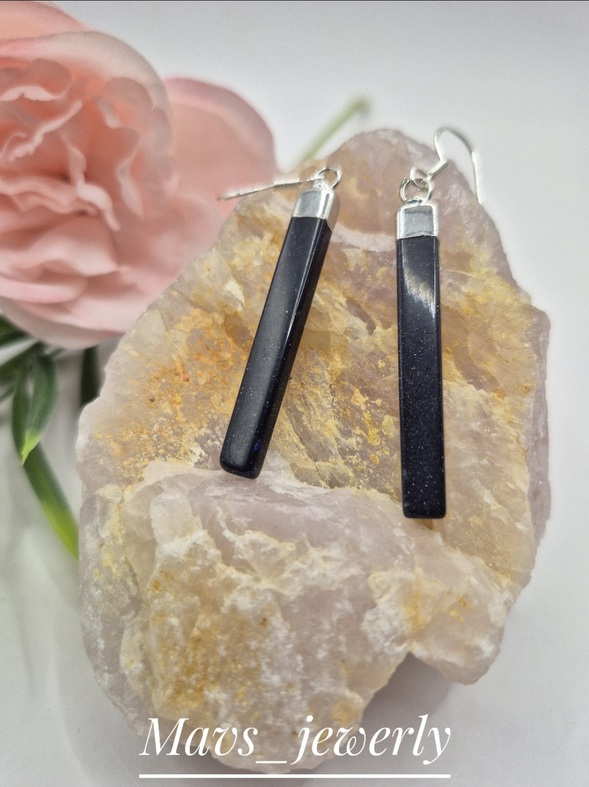
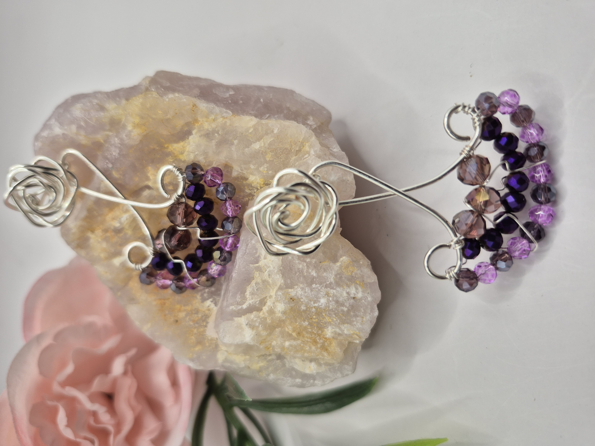

Catálogo de Productos
A continuación se presenta una selección de joyas artesanales elaboradas en plata, piedras semipreciosas, mostacilla, cristales premium y técnicas de alambrismo.

Aro de plata con lamina obsidiana
aro de plata con lámina lisa de obsidiana negra . Propiedades protección, bloqueo y absorción de energía negativa.

Argolla de plata con lapizlazuli
aro argolla de plata con piedra semipreciosa lapizlazuli. Propiedades piedra de la sabiduría y la verdad.

Aro mándala mostacilla miyuki
aro mándala fabricado 100% a mano con mostacilla calibrada miyuki y cristal checo. bases y torito acero quirúrgico.

Aro de argolla doble de mostacilla calibrada miyuki
aro de argolla doble 100% hecho a mano con mostacilla calibrada miyuki y cristal checo y bases y topitos de acero quirúrgico.

Aro de argolla doble de mostacilla miyuki
Accesorio artesanal con detalles turquesa vibrantes y topitos de acero quirúrgico bañado en oro.

Pulsera Amatista
Pulsera de amatista natural asociada a la armonía y serenidad.

Aro plata con piedra semipreciosa citrino
aro de plata con piedra semipreciosa citrino y cristal Swarovski. Propiedades potencia el poder personal, la confianza, la autoestima y la fuerza de voluntad, transmuta la energía negativa en lugar de absorberla.

aro de plata con jade rojo
aro de plata con piedra semipreciosa en bolita de jade rojo. Propiedades piedra de la fuerza vital, la pasión y la acción estimulante

Aro de alambrismo con mostacilla calibrada miyuki
aro confeccionado en su totalidad en sus bases de alambre baño de oro, decorado con mostacilla calibrada miyuki y alambre baño de oro. topito baño de oro, puede hacerse completamente en alambre año de plata, hipoalergenico..

Collar Ojo de Tigre
Collar de piedra ojo de tigre con tonos cálidos y elegantes.

Aros alambrismo
aros de alambre bañados en oro y plata hecho 100%a mano decorado con cristales checos , topito de rosa y base de alambre bañados 1000% hipoalegénico.

Aros de Amatista Floral
Delicados aros artesanales elaborados con piedra amatista natural y detalles florales en metal plateado.